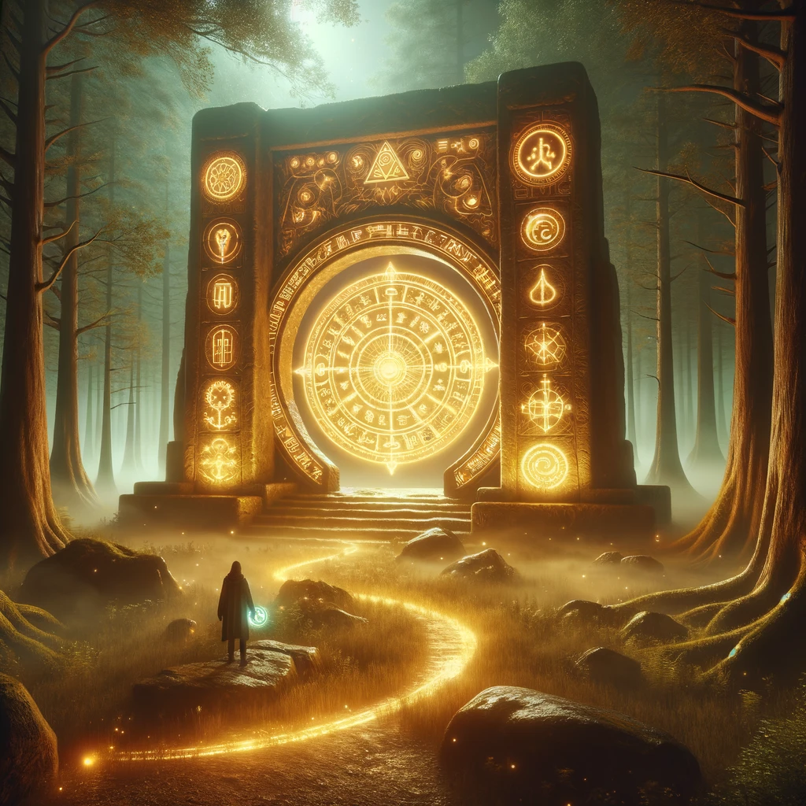

The compass begins to vibrate more intensely, and its glow shifts to a deep, golden hue. The air thickens as if charged with ancient energy. You feel an irresistible pull toward a large stone archway that has appeared before you, inscribed with glowing glyphs.
As you step closer, the archway hums with life. The glyphs rearrange themselves, forming symbols and patterns that seem to unlock long-forgotten memories buried within you. A soft voice, resonating with both wisdom and power, echoes through the clearing:
“You stand at the threshold of the First Light, the origin of the paths you now walk. To learn your origins is to uncover the threads that bind your soul to the universe. Are you ready to see what lies beyond?”
The glyphs flare brightly, illuminating the path ahead. You sense a choice forming—a decision to dive deeper into the knowledge of where it all began.

What will you do?